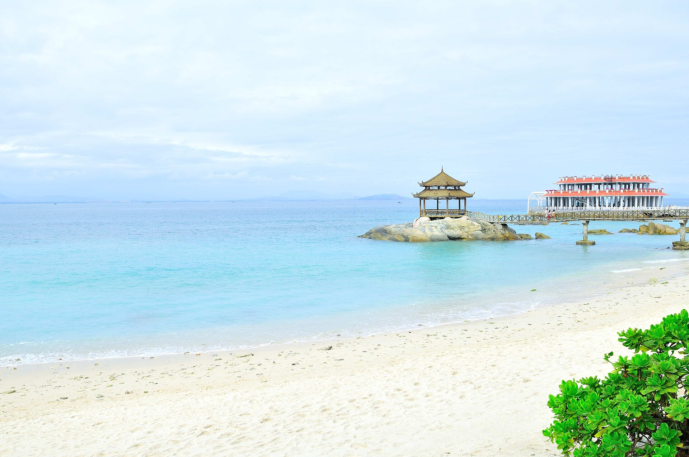
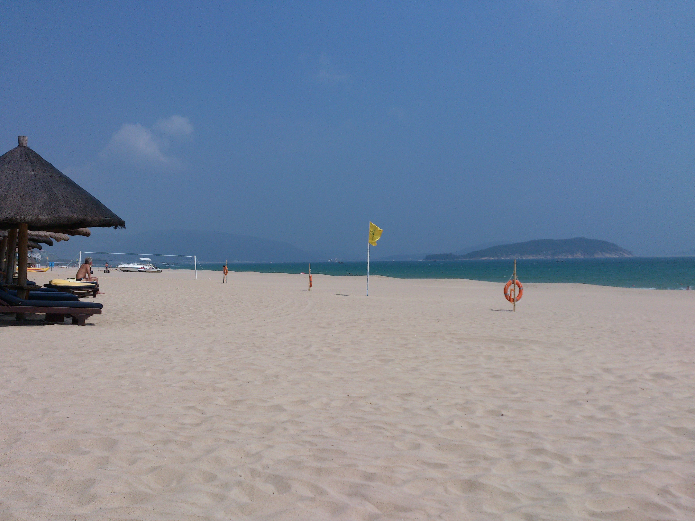

汽车是母车，摩托只是沿海体验。
海口、三亚市区不安排摩托；跨城全部开汽车；摩托只在万宁等出发前向交警和正规租车行复核允许通行的片区短租 1–2 天，且绝不上高速。

01
这套行程围绕晴天、摄影自由度和安全边界设计，不追求每天塞满景点。
汽车是母车，摩托只是沿海体验。
海口、三亚市区不安排摩托；跨城全部开汽车；摩托只在万宁等出发前向交警和正规租车行复核允许通行的片区短租 1–2 天，且绝不上高速。
兼顾三亚晴天、全岛温度和较低暴晒强度。8—9 月虽便宜，但与晴天优先冲突。
海南适合海洋体验；东莞深池更稳定。直接报 AIDA2 没问题，但需完成完整安全与救援训练。
蜈支洲自行购票；冲浪和潜水只购买正规教学服务，把时间和光线掌握在自己手里。
02
海口同店取还车，顺时针走东线、南线和西线；D8 保留为海况与天气机动日。
中午至下午抵达，机场取车并入住。16:30 后拍骑楼、钟楼和街头人文；市区不骑摩托。
约 90 km。上午补给转场，下午拍风车、灯塔方向和长海岸。汽车为主，摩托仅在通行范围得到确认后作为可选。
沿东线开车，博鳌短停；15:30 后在神州半岛或石梅湾拍海边人像。万宁连住两晚。
日月湾初学者区上 2 小时冲浪课。汽车停酒店或正规停车场，短租有牌、有证、有保险的摩托，16:30 后完成沿海骑行和机车照。
下午开车去新村港、清水湾或开放岸线。没有救生员的野海岸只拍照，不游远。
入住海棠湾 9 号等权益酒店两晚。下午回访后海、熟悉码头动线；拥挤村道不开摩托。
争取首批船。这一天不执行“只在下午玩”的作息：早上岛才能兼顾拍摄、项目和返程船班。
若前一天停航则顺延蜈支洲，否则拍亚龙湾、三亚湾或酒店休整。三亚市区全程汽车、打车或步行。
上午转场，下午在开放观察点拍盐田和生产人文，日落前抵达东方。提前补水和加油。
拍礁石、玄武岩和粗粝西岸。仍以汽车为主；乡镇摩托仅在当地确认合法且车况可靠时短租。
下午返回海口，整理车辆、备份照片并确认还车油量。保留半天处理天气或车辆机动。
机场同店还车。相机、硬盘、充电宝与备用锂电池随身携带，不托运。
03
基于 2006—2025 年历史日值：三亚冬末很干爽，但万宁东岸始终比三亚更容易阴雨。
02.25建议窗口开始
03.15建议窗口结束
如果只能在淡季出发，也不要因为酒店便宜就默认选择 8—9 月：高温、雨日和热带天气系统都可能让海上项目连续取消。
同时观察海口、万宁、陵水、三亚和东方，不只看三亚。
按东岸与西岸预报决定顺时针或逆时针，并保留可退订单。
检查海上大风、雷电、浪高、停航与活动退改，不用“晴天”代替海况。
04
汽车解决效率、行李和城市禁摩；摩托只服务于海风、机车摄影和局部通行体验。
紧凑 SUV 或空间较大的轿车即可，选择充分车损与三者保障。
预计 1100—1200 km；不把车辆开上沙滩、盐田生产道或未铺装礁石路。
验牌照、行驶证、保险和合同。合法边界由交警确认，租车行口头承诺不能替代规定。
海口市区、三亚市区、海南高速公路，以及任何有禁行标志、无法确认权限或需要翻越围挡的道路。
05
公开页面能确认酒店归属和普通价，但实际半价取决于账号、日期、房型和库存。
 三亚海滨示意图，非酒店实拍
三亚海滨示意图，非酒店实拍适合环岛起点和终点，公开远期普通价曾约 ¥158 起。
三亚湾与机场方向方便，公开基础园景房样例约 ¥280。
更适合需要餐饮、步行海滩和市区生活的一晚。
06
蜈支洲必须去；冲浪安排正规第一课；自由潜根据“旅行”还是“考证”做选择。
工作日、首批船、官方渠道。摄影优先就买门船票加少量项目；想集中补齐海上体验，再选择写清项目次数、开放条件和退款规则的官方套票。
会法兰佐是优势，但 AIDA2 仍需完成泳池、深度、伙伴保护、救援和考试。
真实海水、浪涌、流和能见度变化，适合度假体验与持证后的开放水域训练。
水温、能见度和深度平台可控，动作可以重复练习，更适合把 AIDA2 当作独立任务。
绝不过度换气、绝不独自水中闭气、绝不把“会法兰佐”当成开放水域安全能力。
查看 AIDA2 官方要求与询价模板主课放日月湾初学者沙底区，后海用于回访或第二次轻松体验。先上至少 2 小时正规课，再由教练判断是否可以独立租板。
¥600—1000两人课程预算
1/1000s冻结冲浪动作
16:00 后浪况允许时拍侧逆光
07
用颜色、速度和人文质感区分东线、南线、西线与海口。

西线不需要像三亚。让它保留盐田、渔港、玄武岩和落日里的粗粝感。

机车照片只在合法停车带或安全支路完成。用 70—200mm 压缩风车和椰林，不为拍摄在主路反复掉头。
人文照片可辨识人物先征得同意；港口、机场、航天与军事敏感设施附近不飞无人机、不拍不明设施。
08
勾选状态只保存在当前浏览器。两人建议各带一个 24 英寸箱，或共用一个 26/28 英寸箱并中途洗衣。
09
下面以平衡型 12 天行程为基础，开关会实时更新总预算。
两人合计，价格是规划区间的中位估算，不是报价。
机票¥2,200
汽车与油费¥5,450
住宿¥4,000
餐饮¥4,200
玩水与门票¥4,100
保险与机动¥2,500
本网站基于截至 2026-08-02 的公开资料快照。航班、融旅特权房、海况、禁摩边界和课程价格都会变化；实际付款前按完整 Markdown 文档中的核验清单复查。